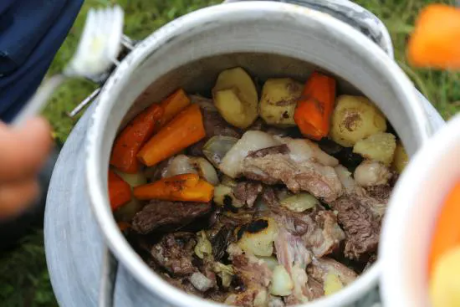

1. Хорхог
Монголын тал нутгийн хамгийн өвөрмөц, эртний хоол бол хорхог юм. Энэ хоол нь нүүдэлчин ахуй, байгальтайгаа зохицон амьдрах ухаан, хамтдаа хуваалцах соёлыг илэрхийлдэг. Хорхог идэх ёслол нь зүгээр нэг хоол биш — найрамдал, зочломтгой зангийн илэрхийлэл юм.
Хорхог гэж юу вэ?
Хорхог бол хонины махыг халсан чулуугаар битүү чанаж болгосон уламжлалт хоол. Энэхүү хоолны гол онцлог нь “халаасан чулуугаар битүү орчинд махаа болгох” аргаар халуун, уур, тос гурвын нэгдэлд махыг жигнэдэгт оршино. Үр дүнд нь мах зөөлөн, шүүслэг, утааны амттай, тос нь байгалийн эрдэс бүхий чулуугаар баяждаг.